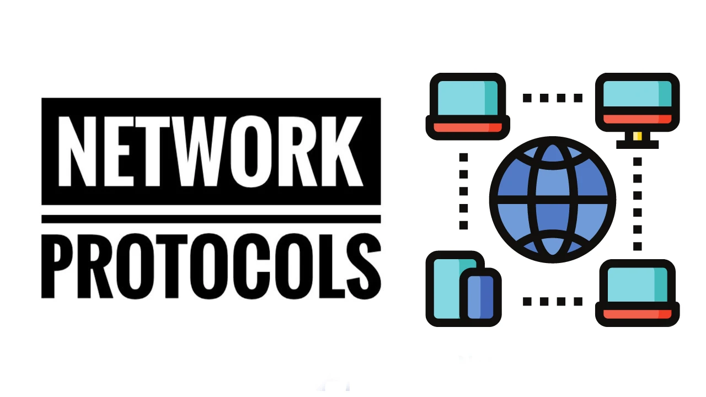
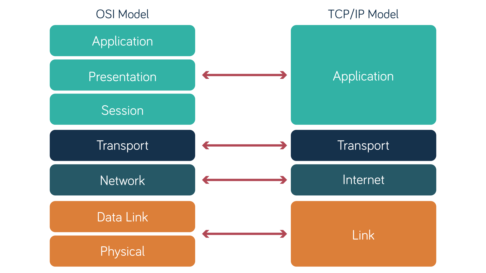

ネットワークプロトコル入門
ネットワークプロトコルはコンピュータネットワークの中核であり、デバイス間の通信方法を定義し、データが正確かつ効率的に安全に転送されることを保証します。ウェブページの閲覧、メールの送信、ビデオ通話のいずれも、その背後にはネットワークプロトコルのサポートが欠かせません。
ネットワークプロトコルを理解することは、コンピュータネットワークを学ぶ基礎であり、ネットワーク技術を習得するための必須の道でもあります。

ネットワークプロトコルの中心的な役割
- 標準化通信：ネットワークプロトコルはデバイス間の通信に統一された標準を提供し、異なるベンダーや異なるオペレーティングシステムのデバイスが相互接続できるようにします。
- データの信頼性の高い転送：エラー検出やデータ再送などのメカニズムにより、ネットワークプロトコルは転送中にデータが失われたり破損したりしないことを保証します。
- 効率的なルーティングとアドレッシング：ネットワークプロトコルは、データを送信元デバイスから宛先デバイスに送信する方法を定義し、アドレス割り当てやルート選択などを含みます。
- セキュリティ：現代のネットワークプロトコルには通常、暗号化と認証の仕組みが含まれており、データを盗聴や改ざんから保護します。
ネットワークプロトコルの重要な構成要素
- 構文：データの形式と構造を定義します。例えば、データパケットのヘッダーとトレーラーがどのように構成されるかなどです。
- 意味論：データの意味を定義します。例えば、あるフィールドは送信元アドレスを表し、別のフィールドは宛先アドレスを表します。
- タイミング：データの送受信の順序を定義します。例えば、TCPプロトコルのスリーウェイハンドシェイクのプロセスです。
- ネットワークプロトコルの階層構造：ネットワークプロトコルは通常、階層モデルに従って構成されます。最も一般的なモデルはOSI 7層モデルとTCP/IP 4層モデルです。各層には特定の機能とプロトコルがあります。
OSI 7層モデル
- 物理層（Physical Layer）：ケーブル、光ファイバー、電波などの生のビットストリームの転送を担当します。
- データリンク層（Data Link Layer）：データをフレームにカプセル化し、同じネットワーク内で転送します（例：イーサネットプロトコル）。
- ネットワーク層（Network Layer）：データパケットのルーティングとアドレッシングを担当します（例：IPプロトコル）。
- トランスポート層（Transport Layer）：エンドツーエンドの信頼性の高い転送を担当します（例：TCP、UDPプロトコル）。
- セッション層（Session Layer）：セッションの確立、管理、終了を担当します（例：RPCプロトコル）。
- プレゼンテーション層（Presentation Layer）：データのフォーマットと暗号化を担当します（例：SSL/TLSプロトコル）。
- アプリケーション層（Application Layer）：ユーザーインターフェースとアプリケーションサービスを提供します（例：HTTP、FTPプロトコル）。
TCP/IP 4層モデル
- ネットワークインターフェース層（Network Interface Layer）：OSIの物理層とデータリンク層に対応します。
- インターネット層（Internet Layer）：OSIのネットワーク層に対応します（例：IPプロトコル）。
- トランスポート層（Transport Layer）：OSIのトランスポート層に対応します（例：TCP、UDPプロトコル）。
- アプリケーション層（Application Layer）：OSIのアプリケーション層、プレゼンテーション層、セッション層に対応します（例：HTTP、DNSプロトコル）。

一般的なネットワークプロトコルの例
- HTTP/HTTPS:ウェブ閲覧に使用され、HTTPSはHTTPの安全なバージョンです。
- TCP/UDP:TCPは信頼性の高い転送を提供し、UDPは高速な転送を提供します。
- IP:データパケットを送信元アドレスから宛先アドレスに送信する役割を担います。
- DNS:ドメイン名をIPアドレスに変換します。
- FTP:ファイル転送に使用されます。
- SMTP/POP3/IMAP:電子メールの送受信に使用されます。

上の図のプロトコルの説明：
| プロトコル名 | 定義 | 主な機能 | 代表的な適用シナリオ |
|---|---|---|---|
| HTTP (HyperText Transfer Protocol) | クライアント・サーバープロトコルであり、リソース（HTMLドキュメントなど）を取得するために使用されます。 | 基本的なWebデータ交換プロトコルであり、クライアントのリクエストとサーバーのレスポンスをサポートします。 | ウェブ閲覧、Webアプリケーションの対話など。 |
| HTTP/3 | HTTPの次の主要バージョン。 | QUIC（モバイルインターネット向けに設計されたトランスポートプロトコル）に基づき、TCPではなくUDPを使用し、より高速なウェブページ応答速度をサポートします。 | 仮想現実（VR）やモバイルアプリなど、高帯域幅と低遅延を必要とするアプリケーション。 |
| HTTPS (HyperText Transfer Protocol Secure) | HTTPの暗号化拡張。 | 暗号化技術（TLSなど）を使用して通信の安全性を保護し、データ漏えいや改ざんを防ぎます。 | 安全なウェブ閲覧、電子商取引、オンライン決済など。 |
| WebSocket | TCPベースの全二重通信プロトコル。 | クライアントとサーバー間のリアルタイムデータプッシュを実現し、双方向通信をサポートします。 | オンラインゲーム、株式取引、インスタントメッセージングアプリなど。 |
| TCP (Transmission Control Protocol) | コネクション指向のトランスポート層プロトコル。 | データパケットの信頼性の高い転送を保証し、順序通りの配信とエラー検出をサポートします。 | ファイル転送やウェブ閲覧など、高い信頼性を必要とするアプリケーション。 |
| UDP (User Datagram Protocol) | コネクションレス型のトランスポート層プロトコル。 | 高速なデータ転送を提供しますが、データパケットの順序と信頼性は保証しません。 | 音声通話、ビデオストリーミング、ゲームなどのリアルタイム通信アプリケーション。 |
| SMTP (Simple Mail Transfer Protocol) | 電子メール転送のための標準プロトコル。 | メールを送信者から受信者のメールサーバーに転送する役割を担います。 | 電子メールの送信と中継。 |
| FTP (File Transfer Protocol) | クライアントとサーバー間でファイルを転送するために使用されます。 | ファイルのアップロードとダウンロード機能を提供し、制御チャネルとデータチャネルの分離をサポートします。 | ファイル共有、リモートファイル管理など。 |
ネットワークプロトコルの重要性
- 相互接続：ネットワークプロトコルはインターネットの基盤であり、プロトコルがなければデバイス間の通信はできません。
- 効率的な通信：階層設計と最適化により、ネットワークプロトコルはデータの効率的な転送を保証します。
- セキュリティ：現代のネットワークプロトコルは暗号化と認証の仕組みを統合し、ユーザーのプライバシーとデータの安全性を保護します。